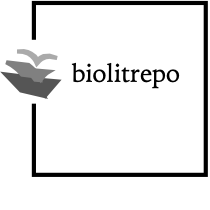

Closed for Maintenance
We are closed for maintenance. We'll be back shortly.
About
 Ocellus is a frontend to the Biodiversity Literature Repository (BLR) with almost 200K images on Zenodo, more than 300K taxonomic treatments in TreatmentBank, and 800,000 citations on RefBank. Ocellus depends on Zenodeo, a nodejs API that queries, analyzes and aggregates results from these various repositories via a single, unified interface. Start typing in the search field and Ocellus will suggest from > 5100 taxonomic familes, and Ocellus will retrieve the results for you.
Check out our privacy policy or give us feedback.
Privacy
We track nothing. What you do with the data here is not our business. Check out our policy on intellectual property.
Intellectual Property
All information we extract or create is dedicated to the public domain under the CC0 Public Domain Dedication. All original content by authors of source article is copyrighted by either the authors or their publishers and is used under its applicable open license. For copyright information in the images, please consult the original record on Zenodo, BLR policies, and the applicable laws of your country.
If you use are our, please be nice and give us credit by citing us as follows: Biodiversity Literature Repository. 2018-. blah, blah. Plazi.
The half-fish in the footer is based on the original of a Blunt-Nosed Minnow, Pimephales notatus (Rafinesque) ♂ from the Internet Archive and has no known copyright restrictions.
Contact
Please contact Plazi for more information or to provide feedback.